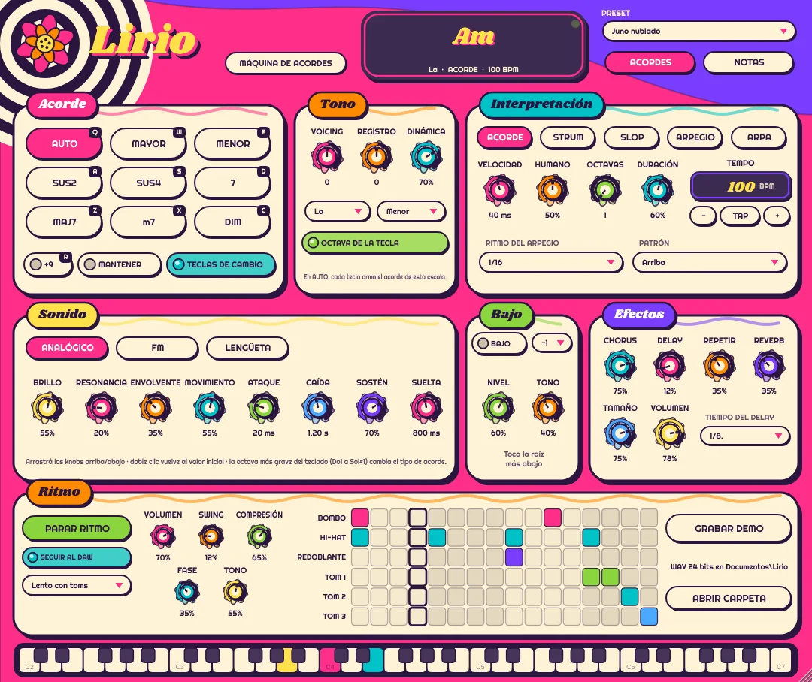

Lirio
Una máquina de acordes: cada tecla toca un acorde completo.
Elegís la tonalidad y Lirio arma los acordes que pertenecen a la escala, o elegís vos el tipo de acorde. Con una mano tocás progresiones enteras, en bloque, rasgueadas como una guitarra o arpegiadas al tempo.
- Nueve tipos de acorde, que cambiás con el teclado de la compu (Q, W, E, A, S, D, Z, X, C) o con las teclas más graves del teclado MIDI
- Acorde, strum, slop, arpegio y arpa
- Tres sonidos: sintetizador analógico, FM y piano eléctrico, con bajo aparte
- Chorus, delay, reverb y caja de ritmos de 16 pasos
- Graba tus ideas en WAV con un botón
Windows: plugin VST3 y programa independiente. Mac: plugin AU y VST3 (Ableton, Logic, GarageBand…) y programa independiente. Mac con chip M o Intel.
Versión 1.4. Software libre (GPLv3): código fuente.